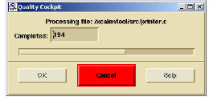

To run queries
1 Determine the scope of the modules you want to run queries on:
• the current project
• a selection of files or projects from the Browser
• one or more groups selected from the Group Manager
2 From the Input From list, select the scope you want to run queries on:
• Current Scope
• Browser Selection
• Group Selection
3 Determine the scope of the queries that you want to run:
• a single query
• a selection of queries from a single filter set
• a selection of queries from several or all filter sets
• the entire body of queries (all filter sets)
Note: You can optionally modify the weight of individual queries by entering a new number in the Weight box. Adjusting the weight of individual queries affects the total quality score. For more information, see Caliper Sessions and Weights.
4 Do one of the following:
• Click Run All.
• Click Run Selected.
A window appears, displaying Caliper progress against each selected file. At any time, you can click Cancel in this window to end the Caliper analysis.
